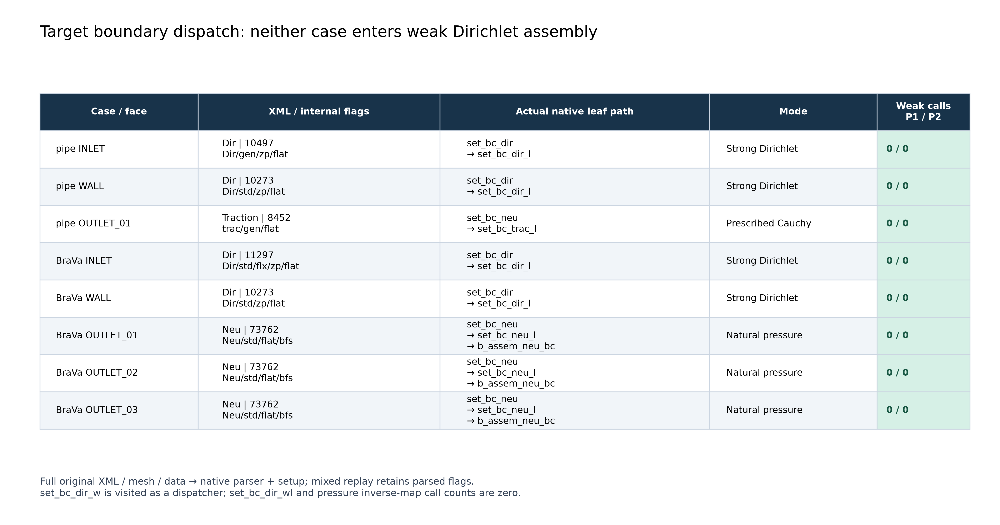
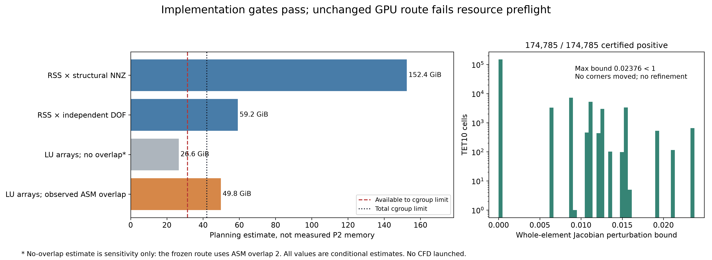

Pipe and BraVa: no weak Dirichlet assembly. Full curved mesh QA passed. CFD not launched: resource preflight stopped the frozen GPU route.
中文主报告 · Readiness gate · Resource estimate and assumptions


These are dispatch and readiness figures. No actual P2 CFD field or trajectory result is claimed.